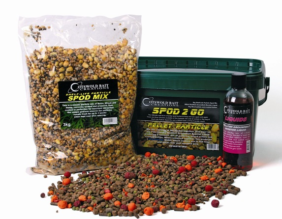
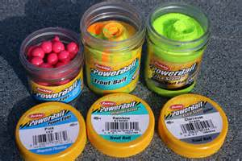

Правила приготовления прикормки
Для изготовления правильной прикормки недостаточно знать о ее оптимальном составе и соотношении компонентов. Под правильной прикормкой я понимаю прикормку наиболее эффективную в данном месте в данное время. Для того, чтобы прикормка оказывала максимальное воздействие на рыбу, она должна быть не только правильно составлена по компонентам, но и правильно приготовлена и правильно использована.
Изготовление прикормки - это кулинария высшего класса. Не возможно передать через печатное слово всех тех нюансов, на которые нужно обратить внимание при изготовлении прикормки, так же как и при прописывании любого рецепта деликатесного блюда. Однако, как существуют определенные необходимые правила кулинарии, так и существуют определенные жёсткие правила приготовления прикормки.
Итак, подавляющее большинство из нас, рыболовов, приобретает в магазинах ту или иную базовую прикормку (самые известные прикормки, строго говоря, уже не базовые, но все равно каждому хочется их «улучшить»). Прочитав или услышав советы удачливого товарища, рыболов принимает решение модифицировать приобретенную стандартную прикормку путем добавления в нее какого-либо «секретного» компонента. И тут вступает в силу правило номер 1.
Правило 1-е
Это правило я бы сформулировал следующим образом. Если дополнительный компонент представляет собой субстрат в виде сухого порошка (ванильный сахар, сушеный чеснок, корица, гвоздика, кориандр, фенхель, какао, обычный сахар или жмых, или в виде безводного масла, то добавлять этот компонент прикормки следует в сухую прикормку за несколько часов (ночь) перед ловлей. Это нужно для того, чтобы ароматические вещества перешли на поверхностно - активный носитель прикормки (отруби или сухую молотую глину).
 В этом случае не будет наблюдаться быстрого, а иногда и мгновенного вымывания добавки из прикормки после ее попадания в воду. Если ваша «секретная» добавка существует в виде водного раствора, то описанный выше прием применять нельзя. Единственным ограничением тому служит тот факт, что в состав практически всех прикормок входят панировочные сухари, а они в присутствии воды могут закиснуть в течение той же ночи. Поэтому рекомендуется за два-три часа до начала ловли отмерить несколько капель раствора добавки, развести их в стакане воды и вылить в сухую смесь прикормки, после этого тщательно перемешать и заняться выбором места ловли и подготовкой снастей.
После того как место ловли выбрано стоит заняться окончательным приготовлением прикормки. Для этого в сухую смесь понемногу добавляется вода и все это тщательно и непрерывно перемешивается. То количество воды, которое указано на упаковке сухой прикормки приводится изготовителями приблизительно.
Если вам хочется сделать прикормку рассыпчатой. то и воды нужно добавлять меньше. В любом случае, как только прикормка достигнет состояния, когда из нее легко будут лепиться комки, прикормку следует оставить на несколько минут. Сухари и другие наполнители, например, жмых, впитают воду, и прикормка опять станет рассыпчатой. Тогда нужно добавить еще воды, если вы будете ловить на течении или с большой глубины.
Правило 2-е
Никогда нельзя добавлять в прикормку сразу много воды, если воды будет больше, чем это нужно для связывания компонентов, то исправить положение будет нелегко. Добавление сухой прикормки помогает, но сухой смеси приходится добавлять обычно довольно много. И у вас в конечном итоге получится избыток прикормки. Отсюда следует третье правило.
Правило 3-е
Заключается в том, что нельзя замешивать всю сухую прикормку сразу, следует иметь ее запас, на всякий случай.
Правило 4-е
Если вы планируете в готовую прикормку добавлять мотыля или опарыша, то имейте в виду, что мотыль сильно разрыхляет любую прикормку, особенно это сказывается на консистенции прикормки, если мотыля добавлять больше, чем 100 г на кг прикормки. Опарыш в любых количествах разрыхляет прикормку, так как он быстро вылезает из комка прикормки любой консистенции.
Поэтому опарыша нужно добавлять в прикормку дозами, после добавления опарыша сразу же лепить комок и бросать его в точку ловли. Мотыля перед добавлением я всегда замачиваю в отдельной емкости с водой, в противном случае мотыль начинает всплывать после попадания комка прикормки на дно.
Правило 5-е
Готовую прикормку нужно превратить в практически одинаковые по размеру и весу комки. Чем стандартнее будут комки, тем точнее вы положите прикормку в точку ловли. Особенно важно выполнение этого правила, если вы ловите способом «дальнего заброса» или фидером без кормушки. В этом случае прикармливание проводится с помощью специальной рогатки.
Точность стрельбы может быть достигнута только в том случае, если все шары будут одинаковые по весу. Для приготовления стандартных шаров даже производятся специальные сферические чашки.
Правило 6-е
Оно заключается в том, что прикармливать нужно определенную точку ловли диаметром не более одного метра. Нередко рыба начинает ловиться не в прикормленной точке, а в стороне от нее. Этот факт можно объяснить несколькими причинами.
Во-первых, прикормка была недостаточно тяжелая, и ее снесло течением. Для того, чтобы утяжелить шары прикормки, очень хорошо закладывать внутрь шара небольшой камешек.
Вторая причина может заключаться в том, что вы добавили в прикормку слишком много ароматизатора, и рыба заняла позицию на границе приемлемой для ее восприятия концентрации ароматизатора. Третья причина может заключаться в том, что прикормка резко выделяется по цвету на фоне дна. Поэтому опытные рыболовы добавляют в прикормку на стадии добавления жидких ароматизаторов и аттрактантов еще и пищевые красители.
В процессе ловли частенько выясняется, что желательно скорректировать консистенцию прикормки, то есть сделать ее или более густой, или более рассыпчатой. Поэтому полезно иметь с собой толокно или глину, или чистые панировочные сухари для того, чтобы сделать прикормку более вязкой, нередко помогает и добавление жирной земли.
Для того, чтобы сделать ее более рассыпчатой, добавляют воду, песок и отруби. Неплохо также добавлять сухой молотый жмых, но существует опасность, что комки прикормки начнут всплывать, поэтому добавление сухого жмыха возможно только во время ловли на водоемах без течения и на небольшой глубине (до полутора метров).
Правило 7-е
Оно заключается в том, что если вы почувствовали, что состав или консистенцию приготовленной прикормки вы уже исправить в нужную сторону не можете, прикормку лучше выбросить, но не в точку ловли.  Как показывает практика, лучше сделать меньше в несколько раз по количеству качественной прикормки требуемого состава и консистенции, чем портить себе ловлю плохой прикормкой. Правило это очень важное и я специально обращаю на него внимание.
Отсюда следует последнее правило, которое заключается в том, что хорошей прикормки не требуется много, зачастую на три часа ловли достаточно полкило, если ловля происходит на водоеме без течения, и около двух кг при ловле на течении, но это ориентировочно. Если рыбы много и она активная, то такого количества прикормки скорее всего не хватит. В том случае, если рыба осторожная и клюет неохотно, может статься и так, что на всю рыбалку будет достаточно всего одной двух пригоршней прикормки.
Ещё одно правило
Есть ещё одно правило которое появилось в результате упорных, но безрезультатных поисков особой, универсальной добавки в прикормку. Это правило я формулирую так, что в прикормку можно добавлять все, что угодно, любой компонент, лишь бы он не оказывал отрицательного воздействия на клев рыбы. Принцип многокомпонентное добавок в базовую прикормку предполагает, что в данное время в данном месте какой-либо из смеси компонентов окажется привлекательным для рыбы.
Но отсюда вытекает и еще один вывод. Нужно иметь в виду, что растворимые аминокислоты (фруктовые эссенции в бытовом понимании) могут реагировать друг с другом, а продукты их реакций будут не по вкусу рыбе. Поэтому смешиванием жидких водорастворимых ароматизаторов я заниматься не советую. Кроме того, что прикормку нужно правильно составить, приготовить и замешать, ею еще нужно правильно воспользоваться.
Правила применение приманки на водоеме
Так, если вы ловите на течении или крупную, осторожную рыбу, то прикормку следует положить на дно так, чтобы она образовала сплошное пятно на дне и не давала мути, которая привлекает много мелочи. Такой прикормкой обычно лучше кормить сразу много, но с большими перерывами.
Наоборот, если вы ловите плотву или окуня, или мелкую густеру и подлещика в полводы или над дном, то прикормка должна мутить, рассыпаться в толще воды для образования облака. Для поддержания облака лучше подбрасывать очень небольшие комочки прикормки буквально при каждом перезабросе оснастки с насадкой. Нередко в водохранилищах подлещик летом поднимается на метр-два выше дна и медленно тонущая рассыпчатая прикормка бывает просто незаменима.
Если объектом ловли является уклейка, то для ловли в поверхностных слоях и на мелководье незаменима очень легкая или очень жидкая прикормка, которая дает устойчивое пятно мути из мелких частичек сухарей, толокна, сухого молока или яичного порошка. Но если вы собрались ловить крупную уклейку, которая предпочитает более глубокие слои воды (и даже придонные), то нужно воспользоваться обычной донной тяжелой прикормкой. Обычные разговоры о делении прикормок на плотвиные, лещовые, карасевые или уклеечные правомерны лишь в отношении основного аттрактанта, который предпочитает тот или иной вид рыб. Считается, что в большинстве случаев для плотвы лучше применять анис, для карася — какао, а для леща — ваниль, но это очень приблизительно. Иногда тяжелые прикормки относят к дешевым, более легкие - к плотвиным, а совсем легкие и рассыпчатые - к уклеечным.
И опять же, это очень условно. Все зависит от того, на каком горизонте кормится рыба. Найдя этот горизонт, и нужно регулировать консистенцию прикормки и ее состав, а в зависимости от активности рыбы — количество прикормки и темп прикармливания. И здесь однозначных готовых рецептов нет, нужно просто больше ловить и больше экспериментировать и не жалеть времени на исправление собственных огрехов непосредственно во время ловли.
См также:Простые прикормки>>>
5 причин неудачного прикармливания>>>
Тактика прикармливания рыбы в стоячей воде>>>
Тактика прикармливания рыбы на течении>>>
Рецепты прикормок и насадок>>>
Ошибки прикармливания>>>
Мы надеемся, что данная статья поможет Вам добиться хороших результатов в прикармливании на рыбалке. А так же будет полезна не только новичку, но и поможет профессионалу освежить в памяти полезные нюансы, ответит на все ваши рыбацкие вопросы.
Инструкция – руководство по самостоятельному освоению правил прикормки рыбы.